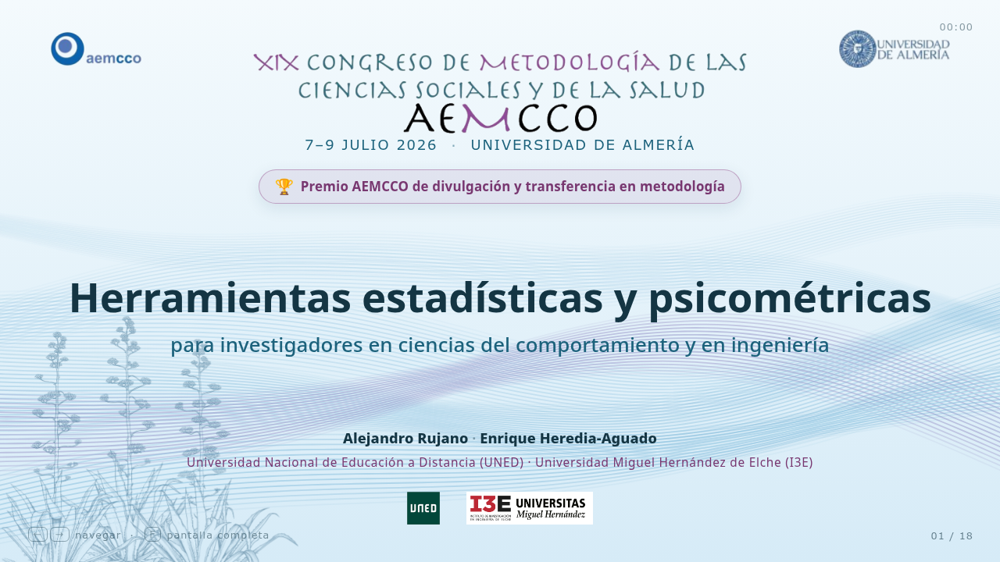
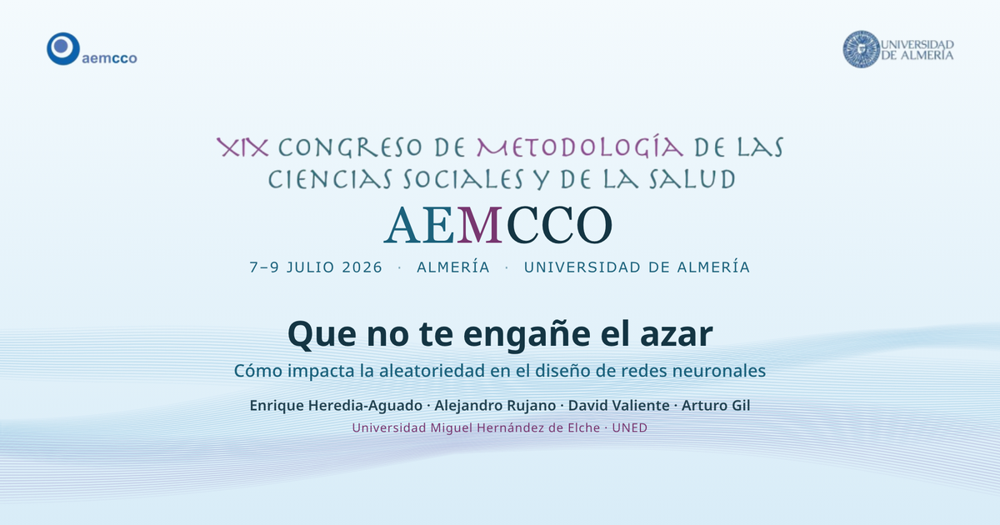

Herramientas estadísticas y psicométricas
Demo del Premio AEMCCO de divulgación y transferencia en metodología: Psychometric Tools y MLV Tools. Rujano, Heredia-Aguado.
Charlas en HTML autocontenido — navega con ← →, F para pantalla completa.

Demo del Premio AEMCCO de divulgación y transferencia en metodología: Psychometric Tools y MLV Tools. Rujano, Heredia-Aguado.

Cómo impacta la aleatoriedad en el diseño de redes neuronales. Heredia-Aguado, Rujano, Valiente, Gil.